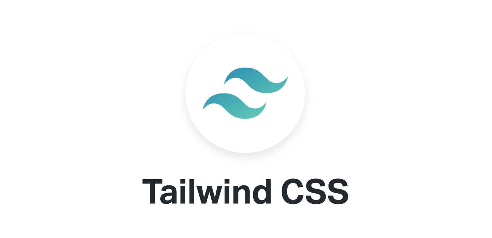
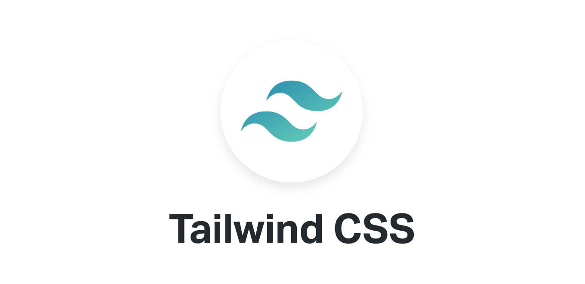
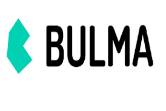
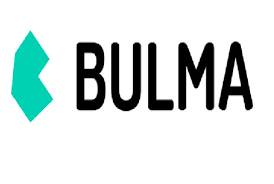

Frameworks CSS
Un entorno de trabajo (del inglés framework), o marco de trabajo es un conjunto estandarizado de conceptos, prácticas y criterios para enfocar un tipo de problemática particular que sirve como referencia, para enfrentar y resolver nuevos problemas de índole similar.
Uso de los Frameworks
Para cualquier proyecto en Internet se requiere un desarrollador web que produzca el software o la aplicación que necesitamos. Dependiendo del tipo de proyecto, esta tarea puede durar mucho tiempo si se crea de la nada. Es necesario elaborar parte por parte, haciendo pruebas y aciertos hasta conseguir el objetivo. Todo esto puede requerir uno o más programadores, además del tiempo suficiente para realizar las pruebas necesarias hasta que el software esté funcionando perfectamente.
Tipos de frameworks
- Para aplicaciones web
Son aquellos Frameworks que se utilizan específicamente para la creación de proyectos online. Desde el diseño web de una página hasta los servicios web más específicos que puedas imaginarte.
- Para aplicaciones en general
Permite complementar la estructura de una aplicación para un sistema operativo. Por ejemplo, Microsoft ha desarrollado el .NET Framework que ayuda a los programadores a reutilizar estructuras ya elaboradas. Este Framework ya viene instalado en su sistema operativo, el popular Windows.
- Para tecnología AJAX
La tecnología AJAX permite que el usuario haga solicitaciones al servidor sin que sea necesario recargar una página después de cada nueva solicitud. De esta forma, las informaciones van surgiendo a medida que son solicitadas sin la necesidad de que la página quede recargándose. Existen Frameworks específicos para esta tecnología, permitiendo la reutilización de un código ya elaborado.
- De gestión de contenidos
A estos Frameworks también se les conoce como CMF, que significa, Content Manager Framework y facilita la programación de aplicaciones de un Sistema de Gestión de Contenidos, popularmente conocido como CMS, por ejemplo, WordPress. Existe una gran variedad de CMF de acuerdo con la plataforma para la que será creada la aplicación.
- De Multimedia
Esta interfaz facilita el trabajo de los programadores que trabajan con video, audio e imagen y colabora con la creación de las aplicaciones multimedia en general, pudiendo servir para proyectos más complejos, como videoconferencias y conversores de medios. Como has podido ver es posible implementar un Framework en cualquier proyecto de programación, incluso en otros ámbitos como el Marketing, como lo veremos a continuación.
Frameworks CSS
- Tailwind CSS
Es muy personalizable, permite crear una interfaz de usuario única, jugar con los colores, tamaños de borde, de fuente, paddings, márgenes, sombras y otros elementos y propiedades. Este framework se centra en los nombres de clases se le hará difícil d0ominarla si no tiene nociones de CSS y de la herramienta Atomic CSS.
- Bootstrap
Es uno de los mas populares en la actualidad, hasta la fecha se encuentra en su versión 4.4.1, sus características son esquemas de colores, modificadores, clases útiles para usar formularios, cards, listas, tablas, videos, carrusel, ventanas modales, tooltips, etc. Esta construida sobre SASS y es compatible con LESS.
- Foundation
Junto con Bootstrap son uno de los más utilizados en la actualidad, Foundation es más sofisticado, así mismo es muy flexible y fácil de personalizar. Permite crear aplicaciones y páginas web, adaptable a los dispositivos. Empresas como Mozilla, HP, Cisco, eBay, Facebook, Adobe, Disney, entre otras utilizan Foundation.
- Pure CSS
Es adaptable a los dispositivos y fue creado por Yahoo! en el 2014, fue construido sobre la herramienta Normalize CSS. A diferencia de Bootstrap, no permite crear diseños fijos y es muy ligero, pesa alrededor d e3,5 Kb, cuando se comprime y se minimiza. Cuenta con menús horizontales, verticales y desplegables, así mismo con formularios, botones, tablas, etc.
- Bulma
Es open source y esta cresado para trabajar con el diseño de cajas flexibles FlexBox. Es muy ligero, liviano y cuanta con soporte para móviles. Cuenta con más de 200 mil usuarios hasta el momento y es de los más populares junto con Bootstrap y Foundation.
 

 
